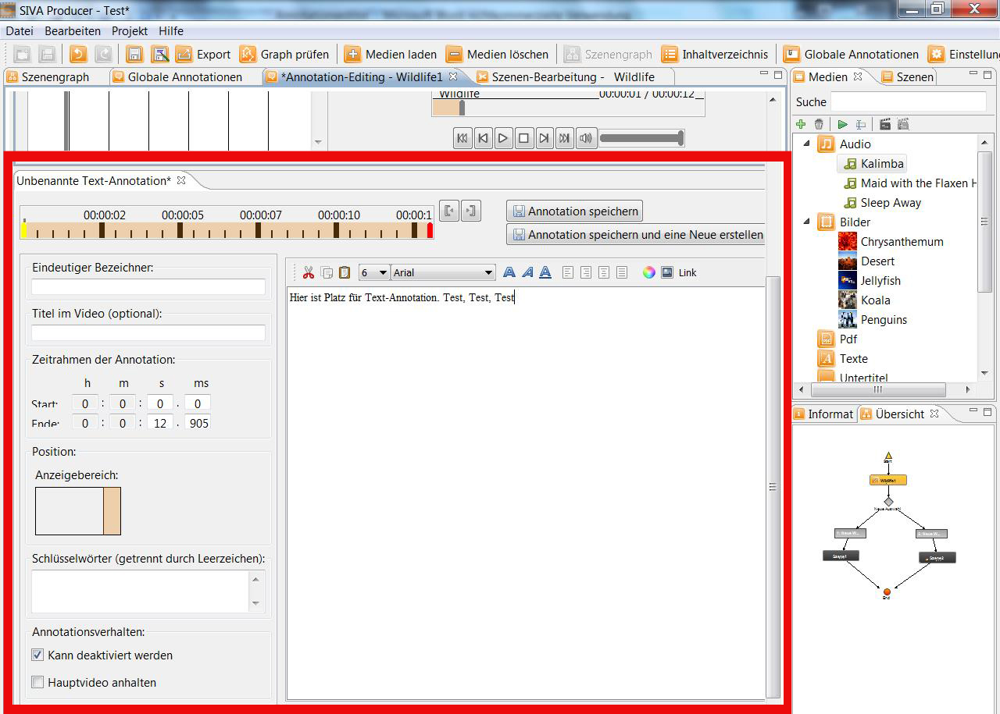
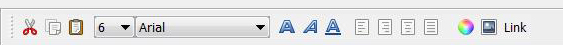
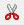
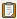
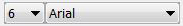
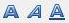
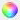
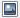
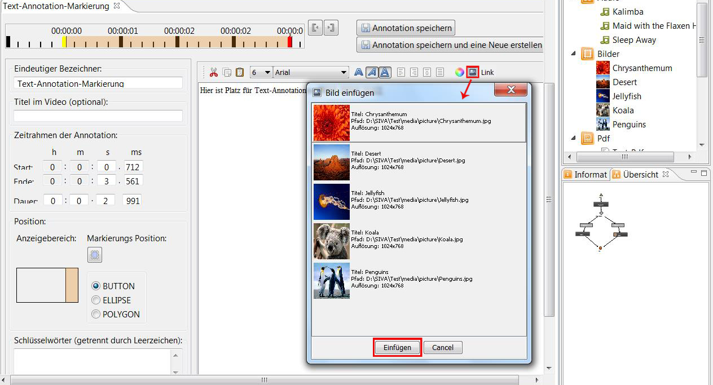
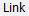

Erstellen von Richtext-Annotationen
Richtext-Annotationen können, falls bereits erstellt, aus dem Medien-Repository per Drag and Drop auf eine Szene im
Szenengraphen gezogen werden. Danach können Start- und Endzeitpunkt der Wiedergabe festgelegt werden. Außerdem kann die Annotation mit
einem Namen versehen werden.
Siehe dazu in der Hilfe
Tasks > Annotationen > Erstellen von Annotationen
Richtext-Editor
Eine Richtext-Annotation kann auch mit Hilfe des Richtext-Editors erstellt werden.
Nach der Auswahl von "Neue RICHTEXT-Annoation anlegen" öffnet sich der Richtext-Editor, in dem Text eingegeben und formatiert
werden kann.

Funktionen des Richtext-Editors
Folgende Funktionen stehen in der Funktionsleiste zur Verfügung:

- 
Ausschneiden von Text
-
Kopieren von Text
- 
Einfügen von kopiertem Text
- 
Hier können Schriftgröße und Schriftart verändert werden
- 
Mit diesen Funktionen kann Text fett, kursiv oder unterstrichen formatiert werden
-
Hier kann der Text linksbündig, rechtsbündig, zentriert oder in blocksatz formatiert werden
- 
Hier kann die Farbe ausgewählt werden
- 
Mit dieser Funktion kann ein Bild eingefügt werden

- 
Hier kann ein Link eingefügt werden